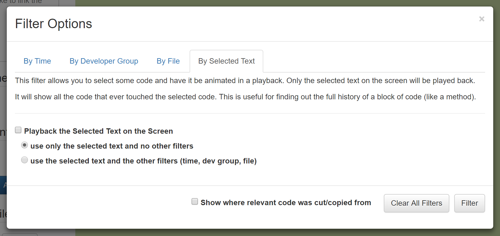

Storyteller: Docs
Playback Filtering
By default, a playback displays the entire history of a repository. If the same repository is being used continuously then this could go back months or years. Sometimes a playback author may want to limit what gets displayed in the playback. For example, a developer might want to create a daily playback of their most recent work to share with their team or to create a detailed daily journal. Filters limit what gets animated in a playback and can be used to create focused playbacks.
There are four different filters that are available: by time, by developer group, by file, and by selected text. The filters can be combined to specify which events are relevant to the playback author. For example, I might want to see a playback that shows what Bob and Alice have contributed to the file main.cpp in the last week. Any events that pass the filter conditions are marked as relevant and will be animated in a playback. Any event that does not pass the filter conditions are marked as not relevant.
An event that is marked as not relevant will not be animated in a playback. The non-relevant event will still have an effect on the code on the screen but one cannot walk through the non-relevant events with the playback controls. In other words, when a group of non-relevant events are encountered their effect will take place in a single step up until the next relevant event.
For example, if a playback author had three days worth of history in a repository but only wanted to show what happened yesterday then a time filter could limit the animated events to the last day. When viewing the playback the first two days of development would show up in one step (or one big block of code). The last day's events would be animated on top of the first two day's work.
Tip: The 'Event Info' section of the user interface shows the relevant
event count along with the total event count. If there are still non-relevant events that have not been displayed at
the end of a playback hitting the step forward button >will play out the last group of non-relevant events.
Tip: Relevant code shows up as bold and has the color blue or green (depending on if it is a recent change). Non-relevant code shows up in italics and is black.
By Time

A time filter allows one to specify which events they would like to see in one or more groups of times.
Storyteller will look for ranges of time in the "Selected time span filters". All events that happened in those ranges will be marked as relevant. There is a default span for the lifetime of the repository.
There are controls to specify a time range by manually entering a date/time for the start and end of the range. Alternatively, the button "Use the current event's time" will grab the timestamp from the last event that was animated. This allows a developer to control the filter based on the current state of the playback without having to know exact date/times.
After a start and end time have been specified the author needs to add the time span filter by clicking on the "Add a time span to the filter" button. When all of the timespans have been entered (and any other filters have been spcified) the user must click the "Filter" button to apply the filter and prepare the playback.
Tip: When creating a time filter make sure to remove the default time span that captures all of the development history otherwise all of the events will be relevant.
By Developer Group

The developer group filter limits the relevant events to one or more groups of developers. Storyteller supports programming in groups. Every individual and group or developers are added to a 'developer group' and can be selected for filtering. By default, all of the developer groups are included in the filter.
By File

The file filter limits relevant events to one or more files. By default, all of the files are included in the filter.
Tip: Files that have been deleted somewhere in the development of the code are available to select in the filter.
By Selected Text

A selected text filter allows an author to select some text from the playback window and see a playback with a 'deep history' of the selected code. A selected text filter will mark the selected code as relevant but it will also mark any text that ever fell in between the selected code as relevant even if it has been deleted.
This type of filter is useful for looking at the history of blocks of code, like functions. One can select an entire function at a pause point and apply this filter to see how just that function evolved over time.
Tip: The filters can be used by viewers of a playback as well. They are not limited to playback authors. A viewer can limit which parts of an existing playback to watch.
Copy and Paste History
If a revelant event was copied and pasted from a non-relevant source the viewer can choose to mark the non-relevant source as relevant too by selecting "Show where relevant code was cut/copied from" in the filter dialogue.